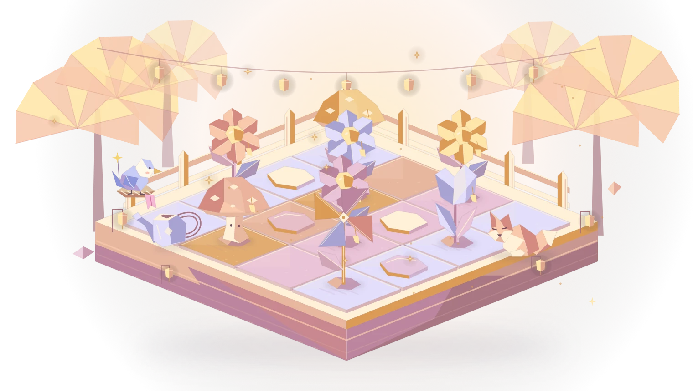
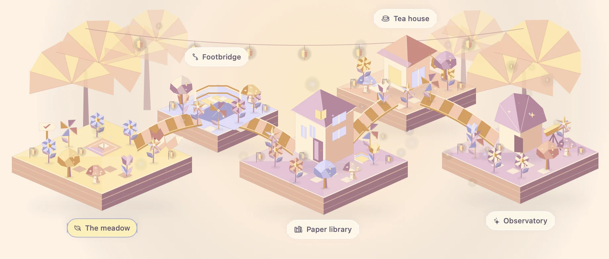

Make roomfor wonder.
A focus app for Mac and iPhone, where time well spent becomes a paper garden.
Find your world
One thing at a time.
Open your book. Finish that thought. Terrace keeps a quiet boundary around your session, then welcomes you back with something worth keeping.
Your other apps keep running. Your garden stays yours.
Pick a little escape.
Same focus. A different kind of magic.
A warm light to come home to. Included free.
Your table.
Their company.
Invite a friend. Work on your own thing. Build terraces together, one finished session at a time.
Private invitations. Shared projects. Friends join free.

Focus stays free.
The things that help you show up belong in the free version. Pro adds a few more places to fall in love with.
Terrace
Free
Focus sessions and app protection. Five magical worlds. Plants, decorations, Garden Passport recovery and a shared table for friends.
Terrace Pro
$3.99 / month
$29.99 billed yearly if you choose annual.
Three more worlds. Nine Pip story chapters. Four guided study-table templates. One App Store subscription for Mac and iPhone.
An optional 14-day trial is available to eligible subscribers. Pro renews automatically until cancelled. Planned US launch prices, in USD.
A few good questions.
When can I get Terrace?
We’re preparing Terrace for launch on Mac and iPhone. It isn’t publicly available yet. Email us for launch news.
Will it close my other apps?
No. On Mac, selected apps are hidden or covered while their work keeps running. macOS manages system dialogs and Space transitions. On iPhone, optional Screen Time permission lets Terrace shield the apps you choose.
Can my friends join without Pro?
Yes. Basic shared gardens and joining a study table are free. Each person works on their own task, and completed sessions help the garden’s shared projects.
Does my garden survive updates?
Yes. Earned progress stays when you update the same app or when Pro ends. Garden Passport connects earned progress between your devices and lets you keep a private recovery copy. A running session stays on the device where it began.
What stays private?
Your study intention and app choices stay on your device. Together is optional and invite-only. This website has no analytics or advertising trackers. Read our privacy policy.
Save a little space.
For your next good hour. For a friend. For a garden that feels like yours.
Email for launch news